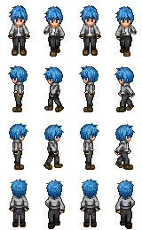

<!DOCTYPE html>
<html lang="zh">

<head>
    <meta charset="UTF-8">
    <meta name="viewport" content="width=device-width, initial-scale=1.0">
    <title>canvas移动人偶</title>
    <style>
        .container {
            width: 1000px;
            margin: 5vh auto;
            /* 父元素设置 flex，margin 居中才有效 */
            display: flex;
        }
        
        canvas {
            /* 单独设置 margin 居中无效 */
            margin: 0 auto;
            border: 1px solid red;
        }
    </style>
</head>

<body>
    <!--  -->
    <div class="container">
        <canvas width="600" height="400"></canvas>
    </div>
</body>
<script>
    // 全局变量
    var data = ['./asset/images/jGirl.png', './asset/images/DMMban.png'];
    var canvas = document.querySelector('canvas'); /* 获取 canvas 元素 */
    var ctx = canvas.getContext('2d'); /* 获取绘图工具上下文（暂时只可以设置 2d） */
    // 基准坐标及尺寸（可调整）
    var cWidth = ctx.canvas.width;
    var cHeight = ctx.canvas.height;
    var baseX = cWidth / 2;
    var baseY = cHeight / 2;
    var baseLength = 40;
    var npc = new Image();
    npc.src = data[1];
    // 绘制
    npc.onload = function(e) {
        var nX = 4; /* 精灵图 x 轴方向图片个数 */
        var nY = 4; /* 精灵图 y 轴方向图片个数 */
        var sX = 0; /* 起始裁剪 sX 坐标 */
        var sY = 0; /* 起始裁剪 sY 坐标 */
        var sWidth = npc.width / nX; /* 裁剪宽度 sWidth */
        var sHeight = npc.height / nY; /* 裁剪宽度 sHeight */
        var dWidth = baseLength; /* 图片绘制宽度 dWidth */
        var dHeight = baseLength * sHeight / sWidth; /* 图片绘制宽度 dHeight */
        var dX = baseX - dWidth / 2; /* 起始绘制 dX 坐标 */
        var dY = baseY - dHeight / 2; /* 起始绘制 dY 坐标 */
        // 动画
        npc.step = 0; /* 协调步调 */

        function animaStep(dir) { /* 行走 */
            dir = dir || 0; /* 方向码 */
            if (dir < 0) return;
            var moveX = dWidth / 5;
            var moveY = dHeight / 5;
            switch (dir) { /* 控制移动方向 */
                case 0:
                    moveX = 0;
                    break;
                case 1:
                    moveX = -moveX;
                    moveY = 0;
                    break;
                case 2:
                    moveY = 0;
                    break;
                case 3:
                    moveX = 0;
                    moveY = -moveY;
                    break;
                default:
                    break;
            }
            ctx.clearRect(dX, dY, dWidth, dHeight);
            dX += moveX;
            dY += moveY;
            ctx.drawImage(npc, sX + sWidth * npc.step, sY + sHeight * dir, sWidth, sHeight, dX, dY, dWidth, dHeight);
            npc.step++;
            npc.step %= nX;
        }

        function animaSteps(dir) { /* 控制人物移动偶数步 */
            clearInterval(npc.animaTimer);
            animaStep(dir);
            setTimeout(function() {
                if (npc.step % 2 == 0) {
                    animaStep(dir);
                }
            }, 300);
        }

        function anima(dir) { /* 自动行走（按键长按时触发） */
            npc.step = 0;
            clearInterval(npc.animaTimer);
            npc.animaTimer = setInterval(function() {
                animaStep(dir);
            }, 300);
        }
        // 移动
        var idle = true; /* 空闲状态，控制动画执行一次 */
        document.onkeydown = function(e) { /* 按键控制移动 */
            var dir = -1;
            switch (e.code) { /* 按键码转方向码 */
                case 'ArrowDown':
                    dir = 0;
                    break;
                case 'ArrowLeft':
                    dir = 1;
                    break;
                case 'ArrowRight':
                    dir = 2;
                    break;
                case 'ArrowUp':
                    dir = 3;
                    break;
                default:
                    break;
            }
            if (e.repeat && idle) { /* 长按执行动画 */
                animaStep(dir); /* 优化执行动画前的停顿 */
                anima(dir);
                idle = false;
            }
            document.onkeyup = function(e) {
                idle = true;
                animaSteps(dir);
            }
        };
        // 初始化
        function init() {
            animaStep();
        }
        init();
    }
</script>

</html>